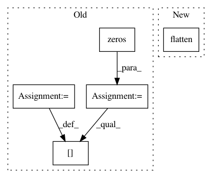

679e77b78f7ba906cd2e6aa18366fa8facd153db,test/test_evaluation/test_test_evaluator.py,TestEvaluator_Test,test_datasets,#TestEvaluator_Test#,35
Before Change
getter.__name__)
with self.subTest(testname):
D = getter()
output_directory = os.path.join(os.path.dirname(__file__),
".%s" % testname)
self.output_directories.append(output_directory)
err = np.zeros([N_TEST_RUNS])
for i in range(N_TEST_RUNS):
D_ = copy.deepcopy(D)
evaluator = TestEvaluator(D_, output_directory, None)
err[i] = evaluator.fit_predict_and_loss()[0]
self.assertTrue(np.isfinite(err[i]))
After Change
D_ = copy.deepcopy(D)
y = D.data["Y_train"]
if len(y.shape) == 2 and y.shape[1] == 1:
y = y.flatten()
queue_ = multiprocessing.Queue()
evaluator = TestEvaluator(D_, backend_mock, queue_)
evaluator.fit_predict_and_loss()
In pattern: SUPERPATTERN
Frequency: 3
Non-data size: 5
Instances
Project Name: automl/auto-sklearn
Commit Name: 679e77b78f7ba906cd2e6aa18366fa8facd153db
Time: 2017-02-11
Author: feurerm@informatik.uni-freiburg.de
File Name: test/test_evaluation/test_test_evaluator.py
Class Name: TestEvaluator_Test
Method Name: test_datasets
Project Name: SheffieldML/GPy
Commit Name: bea74ac5231e47cce34170273771fd61a39e6b73
Time: 2014-03-17
Author: acq11ra@sheffield.ac.uk
File Name: GPy/likelihoods/mixed_noise.py
Class Name: MixedNoise
Method Name: covariance_matrix
Project Name: pymc-devs/pymc3
Commit Name: 6148d1b5107a295310d06adbabff4dc6dee9d33e
Time: 2019-04-18
Author: fonnesbeck@gmail.com
File Name: pymc3/distributions/bound.py
Class Name: _Bounded
Method Name: _random